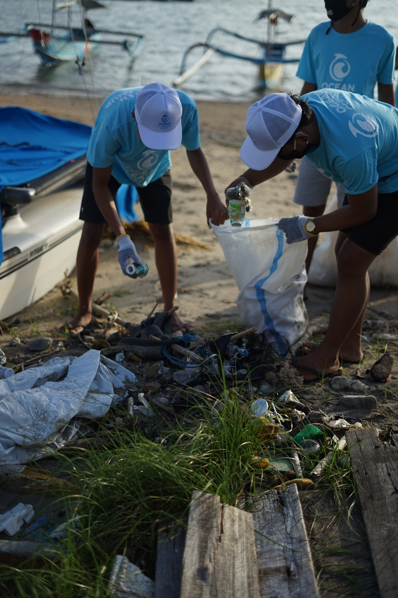
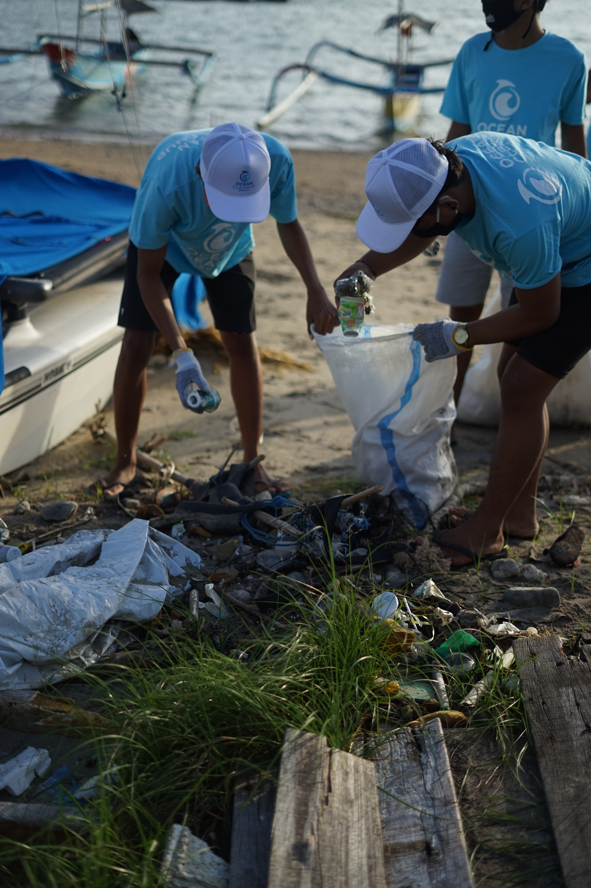

PositAct
`Change the world, one click at a time: Our app makes it easy to support important causes, stay informed on social issues, and connect with other change-makers.`
`Small changes lead to big impacts - start making a difference with our climate action app.`
Intentions
The climate crisis is an overwhelming challenge. “A safe climate is considered by many to be a vital element of the right to a healthy environment” (UN Environment Programme, 2023), and its protection is entirely dependent on the actions and behaviours of the people at large. The recovery of this human-induced emergency is at the mercy of the human response.
As such, the climate crisis sits at the top of humanity’s priority list and at the forefront of the news cycle – a fair segment of the news is dedicated to covering its progress.
Since human involvement and active participation is key to climate remediation, mobilization is high on the climate action agenda. Current civilization needs to be galvanized into breaking out of the traditional, environmentally harmful societal norms – it necessitates motivation to reach for meaningful change. This is achievable through the spread of information: people need to understand and feel the gravity of the issue in order to seek change. The media is instrumental in communicating the state of affairs – the news represent a powerful medium for conveying the urgency of the climate crisis. It communicates the existing and continued assault on the environment, the latest available scientific reports, the international policy negotiations in climate change governance and associated politics, and the direct consequences of the climate change seen around the globe. It is important for the news to do so, because to effectively engage the public in societal change, it requires the public to feel the urgency that will enable them to seek behavioral changes.
Additionally, research shows solid evidence of a “negativity bias”, where despite subjects expressing that they preferred good news, they chose stories with a negative tone over neutral or positive ones. Psychologists have identified our collective, subconscious hunger to hear and remember bad news – our attention is captured by negative words (Stafford, 2014). Since high readership and viewer ratings translate to profit for media outlets, they are ultimately incentivized to produce negative stories.
Our predilection for bad news combined with the strategy to spur societal action through a high volume of information ultimately leads to a packed, negative news cycle – it is overwhelming. The resulting effect is that every day, we are faced – bombarded – with the harsh reality of our changing world through the latest reports of depressing scientific data and events from around the globe. Communities are experiencing an array of first-hand impacts of the climate crisis: fires, floods, droughts, hurricanes. Large corporations are continuing to mine for oil. Biodiversity loss is reaching an unprecedented rate. Elected powers are failing to act.
This leads to the phenomenon of climate anxiety or eco-anxiety (Wright & Osterloff, n.d.). The American Psychology Association (APA) describes eco-anxiety as “the chronic fear of environmental cataclysm that comes from observing the seemingly irrevocable impact of climate change and the associated concern for one's future and that of next generations” (Iberdrola, n.d.). This internalization of great environmental problems manifests itself as psychological consequences with varying seriousness, but common symptoms involve feelings of hopelessness, fear and grief (Wright & Osterloff, n.d.). These mindsets are not primed to tackle climate change.
Despite the news cycle being a strong agent for change – a communicative and connective tool – its current systematic focus on negativity can counterintuitively paralyze its viewers. Instead of motivating change, it spreads environmental doom, causing feelings of hopelessness so deep that it pushes people to give up. It drives people to feel too powerless to enact meaningful change. This project aims to combat this trend. It intends to break the cycle of negativity with supportive actions directly opposing or neutralizing this negativity.
Jamison (2010) observes connections between climate change knowledge and social movements and acknowledges the role of passions and emotions. Here, we aim to harness the power of positive feedback and positive reinforcement to transform climate change knowledge into actions in pursuit of climate justice. “Hope and optimism are crucial for fighting climate change” (Hayhoe, 2021). The psychological method of positive reinforcement is evidenced as powerful and effective to reach desired outcomes. “Positive reinforcement refers to the introduction of a desirable or pleasant stimulus after a behavior. The desirable stimulus reinforces the behavior, making it more likely that the behavior will reoccur” (Ackerman, 2019). To reference the Theory of Change (REF), the long-term goals of climate action is to navigate societal change toward sustainable living, and these can be reached through patterns of behavioural change in the community shaped by positive reinforcement strategies.
“Every fraction of a degree of global heating avoided makes a difference” (Morton, 2022). While the climate crisis as a whole can be presented as a condemned affair, every small act of change deserves celebration, and through positive reinforcement, has the power to incite others.

 

Stay off the negative new cycle, and get connected with your local community. Start making an impact in your community by connecting with one of the dozens of environmental non-profit partners featured on our app.
Aims
“Let's find strength from empathy and connectedness and fight for a world where we take care of ourselves, one another and our shared home” (Wright & Osterloff, n.d.).
- Oppose the negative news cycle by matching its bombarding articles with positive ones from around the globe. It will directly combat the influx of negative messages with a positive one – it will focus on the climate emergency from an angle of spreading good news.
- Empower the small actions that can be made daily and need encouragement. The small acts of recycling, using reusable cups, picking up trash, etc., are seemingly irrelevant in the grand scheme. They can seem meaningless – powerless – in the face of the immensity that is the climate crisis. However, these small acts are nothing but, especially when accumulated. They are individually important, and even more so when amassed by the collective. If the small act receives positive feedback whenever it is performed, and provides data on its contribution to the solution, it can feed the positive loop that will prompt more small acts.
- Keep a log of one’s small rehabilitative acts, and simultaneously track one’s own progress toward climate mitigation.
- Propose new ways of actively engaging and participating in climate mitigation.
- Celebrate the people who are creating change. The application can feature – create profiles – on exemplary change makers. It can include key players and big actors, but crucially, it can also spotlight the small acts of our neighbors (anonymously). It can notify us of the small, local acts from people who are, like us, engaging in the best way they know how. This can connect us as a community and drive the narrative that we are not alone in this global crisis.
In short, the aim of this app is to create a positive force for climate mitigation and make it accessible to as many people as possible on a daily basis.
Strategies
Strategy 1: Positive News Cycle
Like a standard newspaper application, the application has a newsfeed focusing on what’s going on in the world in the field of climate action, using a positive lens. It features news articles highlighting the advances made globally toward climate justice. This can include all facets of the news coverage: politics, business, social movements, scientific and technological advancements, and so on.
Strategy 2: Positive Reinforcement and Feedback on Small Acts
- Every time a user makes an environmentally conscious choice, they are encouraged to log it.
- A message appears with a positive, encouraging note and an informative fact.
- For example: if a user uses a reusable cup, a message full of positivity will pop up: “good work!”. This is followed by data on how many single-use cups have been saved from landfill that day, or how many have been saved through this individual’s choices alone, or how many have been saved globally. The idea is to introduce facts that make this small act seem nothing but small!
Strategy 3: Track Progress and Contribution
- These acts are logged to measure the user’s progress.
- Individual progress reports are generated, which will include milestones and information on their contribution to the whole.
Strategy 4: Propose New Ways of Engaging
- The application has an informative section on how to further engage in innovative change making: more small acts to add to a user’s daily routine.
Strategy 5: Feature and Connect the Community
- The application has profiles featuring powerful change makers globally and in the community.
- This section is inspired by the article by The Guardian where Tailor (2022) presents various people in their 20s who are combating “climate grief by taking on one small piece of the environmental crisis” (Tailor, 2022).
- It also notifies users of similar acts made locally (anonymously) and their cumulative impact.
Climate change is real. Burnout is real. We can fight both crises the same way: by committing to address our own burnout, which will give us the energy and the wisdom to address the burnout of the planet. By leading sustainable lives we can create a sustainable planet. #EarthDay pic.twitter.com/tEDDS8XxCf
— Arianna Huffington (@ariannahuff) April 22, 2023
Hello good souls! 👋🏿
— Climate Critical (@CCESolves) April 28, 2023
Our first the climate and mental health burnout report is live: https://t.co/2HPGiHXVX4. And she’s spicy.
We do this because we love us.#burnoutreport #ccesolves #care2repair pic.twitter.com/Us9RKJ1aOS
Empowering women is key to effective climate action.
— World Bank Climate (@WBG_Climate) April 28, 2023
Minister @OulimataSarr shared a powerful example of women's central role in climate adaptation in #Senegal. Watch: https://t.co/CDRFImSqG5 #ReshapingDevelopment #InvestInPeople pic.twitter.com/vx8tjAjwLW
Method for Monitoring and Evaluating Impact
The monitoring and evaluating of this application’s impacts are highly dependent on data collection. As a mobile application, the back-of-house programming is crucial in information gathering and therefore assessment of progress. It monitors subscriptions traffic volume metrics, such as the number of users, visits, page views and logs.
Tracking the impact of the positivity influx is measured through these hard metrics: a high volume of users is directly proportional to a high success rate for positive influence.
Metrics are also obtained directly from the user. Questionnaires are used at milestones concerning both the experience of the user with the application, along with the user’s mindset regarding the climate crisis. The impact of the positivity is tracked through the user’s responses: a user’s increased feelings of hope in the face of the climate crisis and a decrease in helplessness are of measures of success.
References
- Ackerman, C.E. (2019, January 5). Positive Reinforcement in Psychology (Definition + Examples). Positive Psychology
- Hayhoe, K. (2021, October 20). Why hope and optimism are crucial for fighting climate change. New Scientist
- Iberdrola. (n.d.). Eco-anxiety: the psychological aftermath of the climate crisis.
- Morton, A. (2022, September 12). Reasons for (cautious) optimism: the good news on the climate crisis. The Guardian
- Stafford, T. (2014, July 29). Psychology: Why bad news dominates the headlines. BBC Future.
- Tailor, N. (2022, July 15). ‘Change is possible’: meet the Gen-Zers who embrace climate optimism. The Guardian.
- UN Environnent Programme. (2023, March 31). UN resolution billed as a turning point in climate justice.
- Wright, S., & Osterloff, E. (n.d.). Eco-anxiety: how to cope at a time of climate crisis. Natural History Museum.